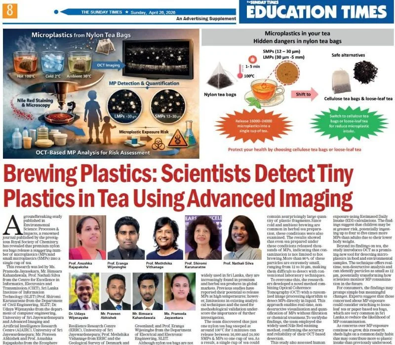
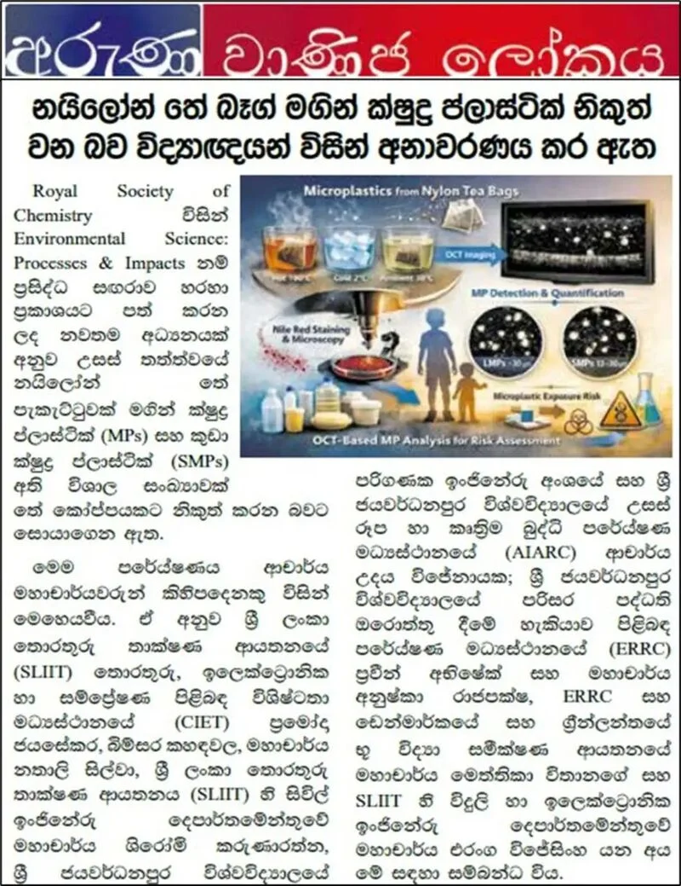
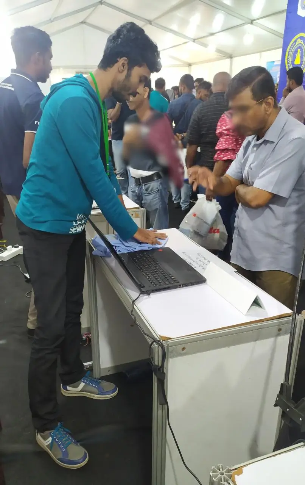

01
Co-first †
Q1 · IF ≈ 9.4
Open Access
Results in Engineering · Elsevier
My research covers computer vision, deep learning, and image processing for optical and biomedical imaging. I work mainly with Optical Coherence Tomography (OCT), developing methods for medical diagnostics, micro-structural analysis, and non-destructive testing.
Published across Elsevier, the Royal Society of Chemistry, and Springer Nature. My name is highlighted in each author list; † marks an equal-contribution (co-first) author.
Featured in national press — see Research in the media below.
Full record on Google Scholar. Journal quartiles per latest Scimago / JCR.
Center for Excellence in Informatics, Electronics & Transmission (CIET) · SLIIT
Faculty of Computing, Sri Lanka Institute of Information Technology
I research Biomedical Engineering and Computer Vision, focusing on Optical Coherence Tomography (OCT) imaging. I build deep learning and machine learning models and image-processing pipelines in Python and C++ for medical diagnostics and micro-structural analysis.
Our OCT microplastics study drew national newspaper coverage; I've also presented undergraduate research at South Asia's largest industrial exhibition.



I'm always happy to discuss computer vision, optical and biomedical imaging, and applied machine learning — whether for collaboration, research, or a conversation. My CV has the full details.